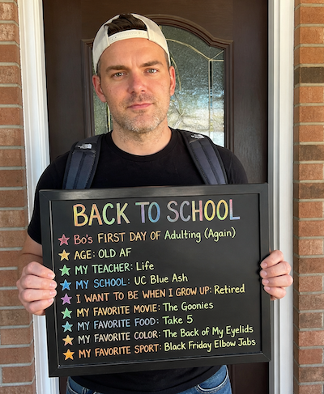
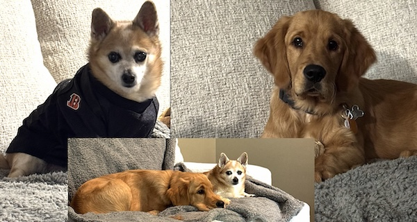

Legally, my name is Gary Oetjen Jr., but I've gone by the nickname "Bo" since I was about six months old. How does one get a nickname that has no correlation to their legal first name? The answer to that will depend on who you ask. The story that I've heard the most is that it came from my grandfather, George William Oetjen, who went by the nickname of Bill. His friends shortened it to "Bo" by taking the first letters of "Bill" and "Oetjen". But, if you ask my father, it stands for "Baby Oetjen."
I'm 39 years old and am a dog dad to Hank and Griffin, or as I like to call them, my "Agents of Chaos." I purchased a home in the Miami Heights/Cleves area in October 2025. This was my return to the west side (west side is the best side).
Currently, I am working full-time at Paycor as a Principal Technical Account Manager. I've been with Paycor for 13 years in multiple different roles and positions. I've grown up with this company. As of April 2025, Paycor was acquired by Paychex, but is still operating as a separate entity but under an "umbrella" of the Paychex organization.
Previously, I attended NKU and graduated in 2012 with a Bachelor of Arts in Public Relations and a minor in Marketing. I've decided to return to school after a 14 year hiatus from academia and returned to UCBA to pursue an Associate of Science in Artificial Intelligence.
One of the main reasons I decided to return to pursue my Associates is because I see how much Artificial Intelligence is being incorporated into everyday tasks within corporate America. Rather than be afraid of the change, I wanted to embrace it and get ahead of it... So, here I am. After graduating, my goal is to open my own AI Consulting business for small businesses; I've realized they typically do not have the resources necessary to keep up with, implement, and take advantage of complex AI workflows within their businesses.

Anyone that knows me knows that I start every school year off with one particular quote from one of my favorite movies growing up, Billy Madison (1995).
As mentioned, I'm a dog dad to the "Agents of Chaos" and I would be remiss if I didn't include an entire section dedicated to these spoiled babies.
At 14 years old, Hank is the boss of the house and is a grouchy old man. He's a Chihuahua/Pomeranian mix and based on some of the faces that he makes at me, I believe he's entered into that stage of life where he is the old man waving his cane at the neighborhood kids and yelling "GET OFF MY LAWN!" These faces are shown at least once a day and are always because of Griffin.
Griffin is a 5 ½ month old Golden Retriever. As with any Golden, he's incredibly smart, but he's also not all there... much like Rose from The Golden Girls. He hasn't quite grasped that Hank is not as big as he is and can't rough house as much as he would like (and these are the times where the old neighbor and his cane faces come from).
